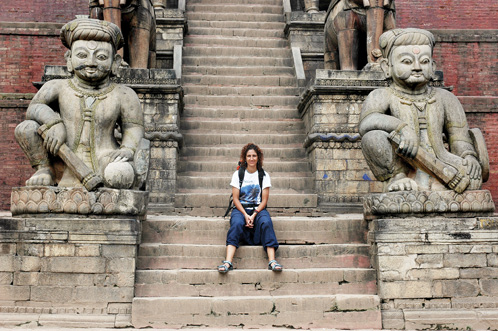

TÜRKİYE, 6 EYLÜL
Tüm bu yemek maceralarına rağmen, bisiklette harcanan efor, sıcak hava ve turist ishali sebebiyle ben 15 kilo verdim, İnci ise 6 kilo. Yolculuk bitip de Bursa’ya döndüğümüzde kendimize bir kutlama yemeği ısmarlamak için şehir merkezine gittik. Bursa’da, ne pideli köfte, ne İskender, ne kuyu kebabı, ne ekmek kadayıfı, ne kestane şekerleri ne de başka bir şey ısmarladık. Çok özlediğimiz konusunda hemfikir olduğumuz tek şey vardı: güveçte kuru fasulye ve pilav. Yanında da İran’da bozkırlardan dilediğim ayran. Deymeyin keyifimize.
Bu sefer de Nepalliler yerine Türk garsonlar, nasıl iştahla birkaç tabak aynı yemekten yediğimize şaşkın şaşkın bakıyorlardı.
Nasıl anlatsaydık ki onlara; bisikletle kat ettiğimiz binlerce kilometreyi, gazlı ayranları, acı acı acı … ve acı Pakistan yemeklerini, Nepal mantısı “Momo”yu, 2 ay önce 98 şu an 84 kg olduğumu, Bursa’ya bir “Momo”cu açma hayallerimizi…

Nepal
Açık Hava müzesi olarak bilinen Bhaktapur şehri.